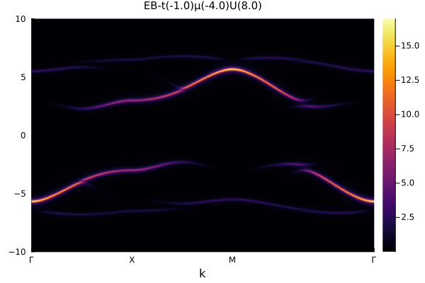
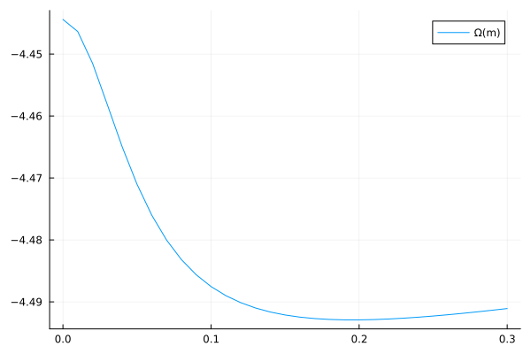
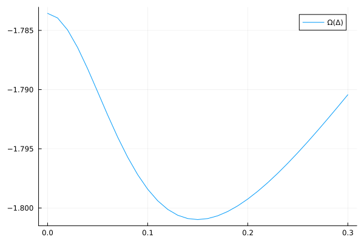

Fermi Hubbard Model on Square Lattice
Single-particle Spectral Function
The following code can compute the single-particle spectral function of the Fermi Hubbard model on a square lattice using cluster perturbation theory (CPT).
using ExactDiagonalization
using LinearAlgebra: tr
using QuantumLattices
using QuantumClusterTheories
using TightBindingApproximation
import Plots
# define the unitcell of the square lattice
unitcell = Lattice([0.0, 0.0]; name=:Square, vectors=[[1.0, 0.0], [0.0, 1.0]])
# define a finite 2×2 cluster of the square lattice with periodic boundary condition
lattice = Lattice(unitcell, (2, 2), ('P', 'P'))
# define the Hilbert space (single-orbital spin-1/2 complex fermion)
hilbert = Hilbert(site=>Fock{:f}(1, 2) for site in eachindex(lattice))
# define the terms
# i.e. the nearest-neighbor hopping, the Hubbard interaction, and the chemical potential
t = Hopping(:t, -1.0, 1)
U = Hubbard(:U, 8.0)
μ = Onsite(:μ, -U.value/2)
# define the quantum number of the sub-Hilbert space in which to carry out the computation
# here the particle number is set to be `length(lattice)` and Sz is set to be 0
quantumnumber = ℕ(length(lattice)) ⊠ 𝕊ᶻ(0)
# define the CPT frontend with exact diagonalization as the impurity solver
cpt = Algorithm(:SquareHubbard, CPT(unitcell, lattice, hilbert, (t, μ, U), quantumnumber))
# define the energy range and the momentum path
es = LinRange(-10.0, 10.0, 501)
path = ReciprocalPath(unitcell, rectangle"Γ-X-M-Γ"; length=100)
# compute the spectral function along the path
spectra = cpt(:EB, DynamicalSpectra(path, es); η=0.1)
# plot the spectral function
Plots.plot(spectra)
Antiferromagnetic Order
The following code demonstrates the study of the antiferromagnetic (AFM) phase in the square lattice Hubbard model using variational cluster approach (VCA). The AFM order is captured by introducing its corresponding Weiss field.
using ExactDiagonalization
using LinearAlgebra: dot
using QuantumLattices
using QuantumClusterTheories
import Plots
# define the lattice
unitcell = Lattice([0.0, 0.0]; vectors=[[1.0, 0.0], [0.0, 1.0]])
lattice = Lattice(unitcell, (2, 2), ('P', 'P'))
# define the Hilbert space (single-orbital spin-1/2 complex fermion)
hilbert = Hilbert(site=>Fock{:f}(1, 2) for site in eachindex(lattice))
# define Hamiltonian terms
t = Hopping(:t, -1.0, 1)
U = Hubbard(:U, 8.0)
m = Onsite(
:m, 0.3, 𝕔⁺𝕔(:, :, σᶻ);
amplitude=bond::Bond -> real(exp(1im*dot((π, π), rcoordinate(bond))))
)
μ = Onsite(:μ, -U.value/2)
# quantum number for the sector (particle number and Sz)
quantumnumber = ℕ(length(lattice)) ⊠ 𝕊ᶻ(0)
# initialize VCA
vca = Algorithm(:SquareHubbard, VCA(unitcell, lattice, hilbert, (t, μ, U), m, quantumnumber))
# get the variational free energy curve
vs = LinRange(0.0, 0.3, 31)
result = zeros(length(vs))
for (i, v) in enumerate(vs)
update!(vca; m=v)
result[i] = Ω(vca)
end
Plots.plot(vs, result; label="Ω(m)")
The staggered magnetization term m has an amplitude that alternates in sign according to exp(1im*dot((π, π), rcoordinate(bond))), which is the Weiss field that induces the AFM order on the bipartite lattice. The chemical potential is set to -U/2 to achieve half-filling. The minimum of the free energy corresponds to a physical solution of the symmetry breaking phase.
d-wave Superconductivity
The following code demonstrates the study of the d-wave superconducting (dSC) phase in the square lattice Hubbard model using VCA. The dSC order is captured by introducing its corresponding pairing Weiss field.
using ExactDiagonalization
using LinearAlgebra: dot
using QuantumLattices
using QuantumClusterTheories
import Plots
# define the lattice
unitcell = Lattice([0.0, 0.0]; vectors=[[1.0, 0.0], [0.0, 1.0]])
lattice = Lattice(unitcell, (2, 2), ('P', 'P'))
# define the Hilbert space (single-orbital spin-1/2 complex fermion)
hilbert = Hilbert(site=>Fock{:f}(1, 2) for site in eachindex(lattice))
# define Hamiltonian terms
t = Hopping(:t, -1.0, 1)
U = Hubbard(:U, 8.0)
Δ = Pairing(
:Δ, 0.2, 1, 𝕔𝕔(:, :, real(1im*σʸ));
amplitude=bond::Bond -> real(exp(2im*azimuth(rcoordinate(bond))))
)
μ = Onsite(:μ, -1.2)
# quantum number for the sector (Sz only)
quantumnumber = 𝕊ᶻ(0)
# initialize VCA
vca = Algorithm(:SquareHubbard, VCA(unitcell, lattice, hilbert, (t, μ, U), Δ, quantumnumber))
# get the variational free energy curve
vs = LinRange(0.0, 0.3, 31)
result = zeros(length(vs))
for (i, v) in enumerate(vs)
update!(vca; Δ=v)
result[i] = Ω(vca)
end
Plots.plot(vs, result; label="Ω(Δ)")
The pairing term Δ has d-wave symmetry encoded in its amplitude real(exp(2im*azimuth(rcoordinate(bond)))), which changes sign under 90-degree rotations. This is the pairing Weiss field that induces the dSC order. The chemical potential is set away from half-filling (-1.2) to favor superconductivity.